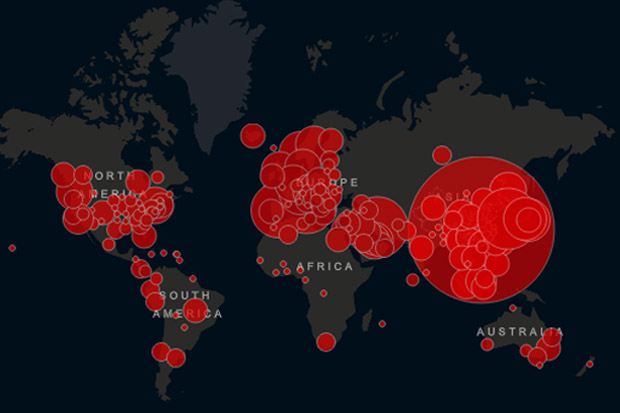

Sebagian besar orang meyakini bahwa kisah awal penyebaran virus corona Covid-19 bermula pada akhir 2019 ketika seseorang terjangkit virus corona dari hewan yang diperdagangkan di pasar seafood Huanan, kota Wuhan, provinsi Hubei, China.
Jadi persebarannya dari mana dong?
Kisah tersebut kemudian berkembang menjadi tragedi memilukan dalam sejarah umat manusia era kiwari. Bermula dari infeksi di Wuhan, Covid-19 kini telah menyebar ke seluruh dunia dan menewaskan hampir 80.000 orang.
Namun, terdapat beberapa aspek misterius tentang asal mula Covid-19 yang masih terus digali oleh para ilmuwan. Termasuk spesies hewan apa yang sebenarnya menularkan virus ini kepada manusia.
Hal ini menjadi sangat penting. Sebab dengan mengetahui aspek yang masih simpang-siur hingga saat ini, kemungkinan terjadinya pandemi berikutnya bisa dicegah.
Melansir The Guardian (8/4/2020) Profesor Stephen Turner, Kepala Departemen Mikrobiologi Monash University, Melbourne, berpendapat bahwa virus ini kemungkinan besar berasal dari kelelawar.
Hipotesis yang menyatakan bahwa virus ini bermula dari interaksi antara manusia dan hewan di pasar hewan Wuhan, menurut Turner kurang meyakinkan.
"Saya tidak berpikir itu (hipotesis tersebut) sangat meyakinkan," kata Turner.
"Masalahnya adalah, sebagian besar informasi yang kita dapat baru sebatas pengamatan," kata dia melanjutkan.
Dia juga menambahkan bahwa virus jenis ini sebenarnya beredar sepanjang waktu di dunia binatang.
Fakta bahwa virus tersebut telah menginfeksi harimau di kebun binatang New York menunjukkan bagaimana virus dapat berpindah antar spesies.
“Memahami luasnya spesies yang dapat terinfeksi oleh virus ini sangat penting karena membantu kita mempersempit dari mana virus itu berasal,” papar dia.
Kembali ke Halaman sebelmunya